A Boolean algebra is a set  with operations
with operations
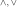
, a unary , and elements
, and elements 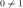
, such that and
and
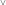
are commutative and associative, each distributes over the other,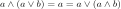
,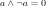
and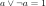
. One writes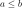
for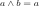
.
In a Boolean algebra,  is a partial order with least element
is a partial order with least element
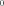
and greatest element , in which
, in which 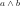
is the infimum and the supremum of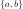
; moreover is an order-reversing involution.
Reflexivity is
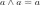
, which follows from the absorption laws: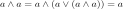
. Antisymmetry: and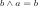
give by commutativity. Transitivity: from and
by commutativity. Transitivity: from and
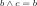
,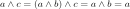
.
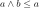
and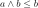
by associativity and idempotence, and any below both satisfies
below both satisfies
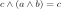
; so is the infimum, and dually for . Absorption gives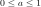
. Finally is an involution because 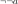
and have the same
meet and join with
have the same
meet and join with 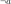
, and it reverses the order since implies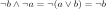
.
A filter of a Boolean algebra is a non-empty
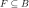
with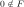
, closed under and
upward closed for ; an ultrafilter is a maximal one.
A filter
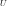
of is an ultrafilter if and only if for every
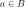
exactly one of, lies in ; and every
filter extends to an ultrafilter. Consequently, for 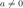
there is an ultrafilter containing.
Not both and can lie in a filter, their meet being
. If is maximal and
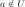
, then some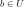
has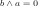
– otherwise the upward closure of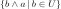
would be a strictly larger filter – and then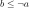
, so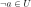
. Conversely the dichotomy forbids any proper extension, exactly as for filters of sets.Zorn's lemma applies to the filters containing a given one, the union of a chain of filters being a filter. For , the upward closure of
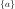
is a filter.Let
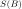
be the set of ultrafilters of a Boolean algebra, and
for put 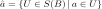
. Then the family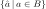
is a basis of a topology on , and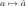
is an injective map of onto a
family of subsets closed under intersection, union and complement, with
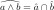
, and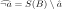
. Every Boolean algebra is therefore isomorphic to an algebra of sets.
The three displayed identities are the ultrafilter criterion: an
ultrafilter contains exactly when it contains both (it is
closed under and upward closed), it contains
exactly when it does not contain , and the identity for
follows from the other two by
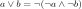
. In particular the family is closed under finite intersections, so it is a basis, and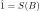
covers.Injectivity: if
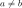
, then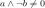
or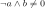
– otherwise and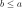
. Say the first; by the previous theorem some ultrafilter contains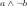
, hence lies in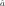
and not in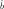
. Being a bijection onto its image preserving the operations, the map is an isomorphism of Boolean algebras.The topology makes compact and Hausdorff with a basis of clopen sets, and the correspondence is a duality: continuous maps of such spaces correspond to homomorphisms of Boolean algebras, backwards. Read in logic, for the algebra of formulas modulo equivalence is the space of complete consistent theories, and its compactness is the compactness theorem.